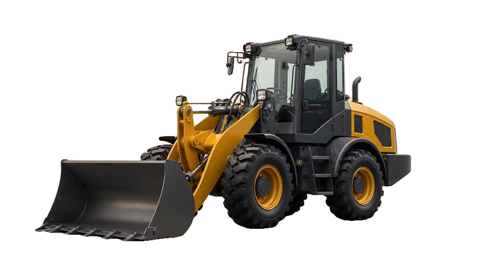

מלגזות
מלגזות חשמליות ודיזל לבעלי מחסנים, קבלנים ומערכים לוגיסטיים.
יבוא ושיווק ציוד כבד

ציוד לעסק קטן, לקבלן, למחצבה, לנמל ולפרויקט תשתית. אנחנו מחברים את הצורך בשטח ליצרן ולכלי הנכון — בלי להעמיס על העסק עלויות שלא מקדמות אותו.
מלגזות חשמליות ודיזל לבעלי מחסנים, קבלנים ומערכים לוגיסטיים.
כלים לעבודות עפר, העמסה ותנועה באתרי בנייה, תשתיות ומחצבות.
כלים לעבודות חפירה, פיתוח ובנייה בפרויקטים ובהיקפי עבודה שונים.
כלים לעבודות הרמה ושינוע כחלק ממגוון הציוד לענפי הבנייה והתשתיות.
פתרונות לציוד בנמלים, מחצבות ומערכים לוגיסטיים ולפרויקטי תשתית.
מחפרים, מיני מחפרים ומעמיסים של LOVOL ו-NICOSAIL, מסודרים לחיפוש והשוואה.
Lift Pro 26 נולדה כשחיפשנו מלגזה לעסק שלנו וגילינו את הפער בין עלות העבודה הישירה מול היצרן לבין המחיר שבעל עסק נדרש לשלם בישראל.
בעלות במקום שכירות מתמשכת.
כאשר התנאים מתאימים לעסק, רכישת כלי חדש במחיר הגיוני יכולה להחליף הוצאה חודשית מתמשכת בנכס שנמצא בבעלותכם ועובד עבורכם.
קשרי יצרן ישירים מחברים יכולות ייצור וטכנולוגיה בינלאומיות לצרכים האמיתיים של עסקים וקבלנים בישראל.
LOVOLיצרנית ציוד תעשייתי וכבד בסין
NICOSAILשיתוף פעולה מסחרי בתחום הציוד
במקביל, החברה בונה קשרי עבודה בישראל עם חברות מובילות בענף התשתיות, ובהן קבוצת אולניק, כדי ללמוד את הצרכים מהשטח ולספק פתרונות שמתאימים לעבודה בפועל.
השבתה עולה כסף. לכן האחריות שלנו לא מסתיימת במסירה: אנחנו מפתחים מעטפת של שירות, תחזוקה וחלקי חילוף שמטרתה לצמצם זמן עמידה ועלויות לאורך שנים.
35%-40%
במקרים רבים ניתן להציע חלקי חילוף מקוריים ואיכותיים בעלות נמוכה יותר מהמחירים המקובלים אצל היבואן הרשמי. החיסכון משתנה לפי החלק, הדגם ומקור האספקה.
כתובת מקומית שמלווה את הכלי גם אחרי המסירה.
רכש בינלאומי גם עבור מותגים מובילים שכבר עובדים בישראל.
מפרט, מידע טכני והשוואה עניינית בתהליך שקוף יותר.
אנחנו מגיעים מעולם הרכב, עם ניסיון של שנים בייבוא ושיווק אביזרים, חלפים ומוצרים לענף. החיפוש אחר מלגזה אחת הפך לבדיקה עמוקה של יצרנים, עלויות יבוא, תחזוקה ושירות — ולדרך חדשה להביא ציוד לישראל.
היום החזון רחב יותר: לבנות חברת ציוד צעירה, חדשנית ותחרותית, שמאפשרת לעסקים לעבוד עם כלים איכותיים בלי שהציוד יהפוך להוצאה שמכבידה על הצמיחה.
״מאחורי כל שופל, באגר, מלגזה או מעמיס עומד עסק ישראלי שצריך להרוויח ולהמשיך לעבוד.״
לפני שבוחרים דגם, הכינו ארבע תשובות קצרות. כך תגיעו לשיחה על הכלי הבא עם מפרט ברור — ולא עם ניחוש.